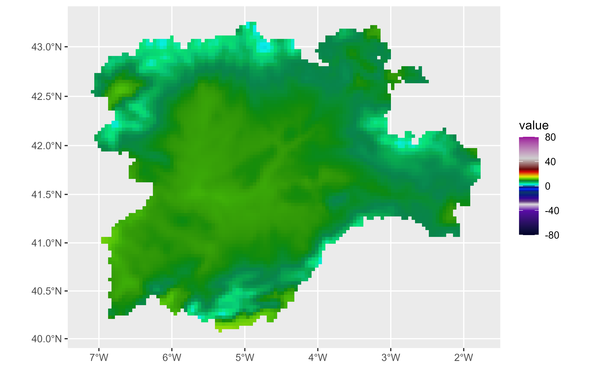
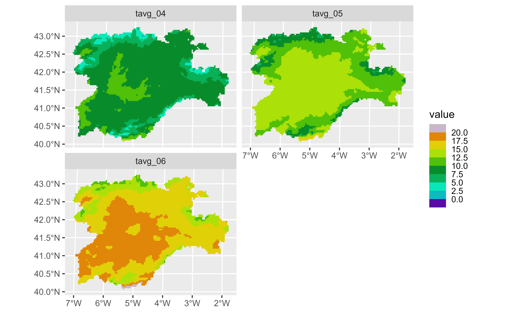
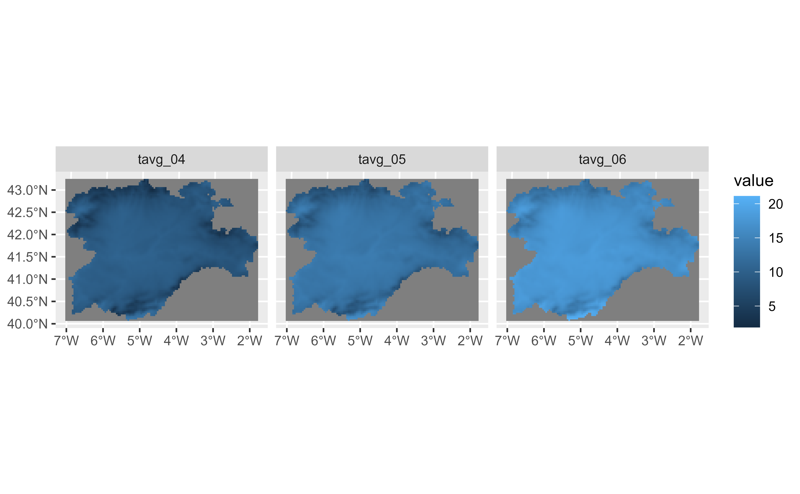
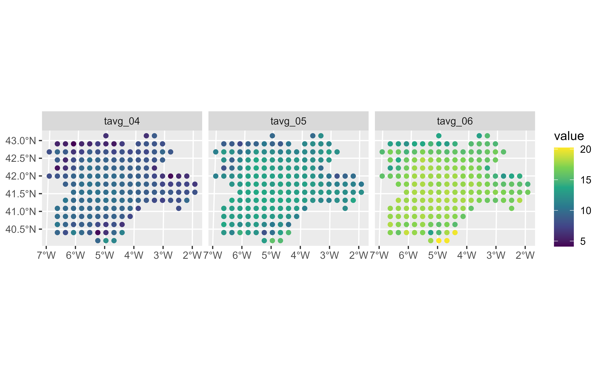
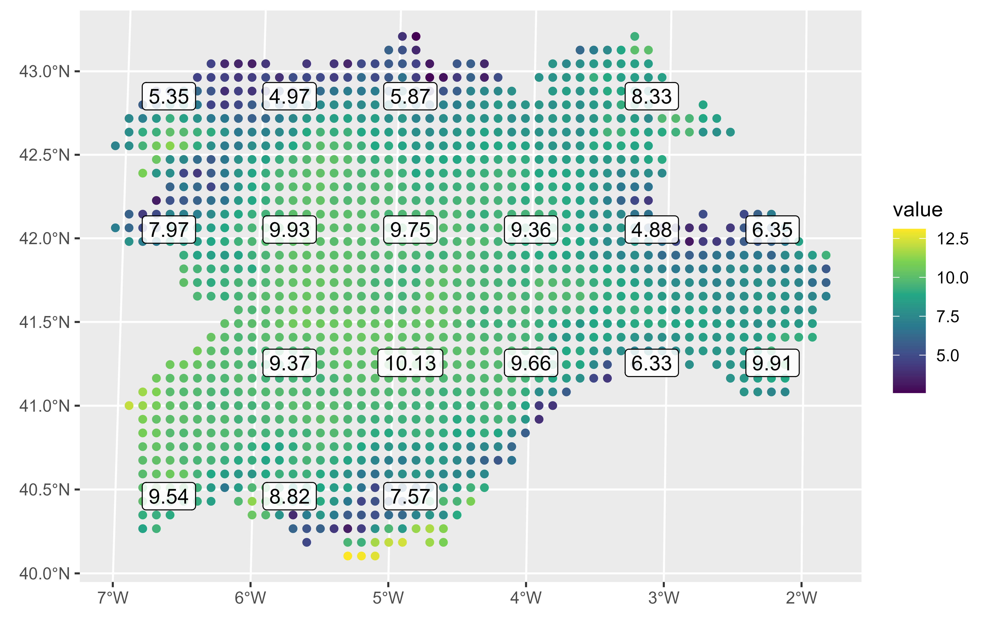

This geom is used to visualise SpatRaster objects (see terra::rast()).
The geom is designed for visualise the object by layers, as terra::plot()
does.
For plotting SpatRaster objects as map tiles (i.e. RGB SpatRaster), use
geom_spatraster_rgb().
The underlying implementation is based on ggplot2::geom_raster().
stat_spatraster() is provided as a complementary function, so the geom
can be modified.
Usage
geom_spatraster(
mapping = aes(),
data,
na.rm = TRUE,
show.legend = NA,
inherit.aes = FALSE,
interpolate = FALSE,
maxcell = 5e+05,
use_coltab = TRUE,
mask_projection = FALSE,
...
)
stat_spatraster(
mapping = aes(),
data,
geom = "raster",
na.rm = TRUE,
show.legend = NA,
inherit.aes = FALSE,
maxcell = 5e+05,
...
)Source
Based on the layer_spatial() implementation on ggspatial package.
Thanks to Dewey Dunnington and ggspatial contributors.
Arguments
- mapping
Set of aesthetic mappings created by
ggplot2::aes(). See Aesthetics specially in the use offillaesthetic.- data
A
SpatRasterobject.- na.rm
If
TRUE, the default, missing values are silently removed. IfFALSE, missing values are removed with a warning.- show.legend
logical. Should this layer be included in the legends?
NA, the default, includes if any aesthetics are mapped.FALSEnever includes, andTRUEalways includes. It can also be a named logical vector to finely select the aesthetics to display. To include legend keys for all levels, even when no data exists, useTRUE. IfNA, all levels are shown in legend, but unobserved levels are omitted.- inherit.aes
If
FALSE, overrides the default aesthetics, rather than combining with them.- interpolate
If
TRUEinterpolate linearly, ifFALSE(the default) don't interpolate.- maxcell
positive integer. Maximum number of cells to use for the plot.
- use_coltab
Logical. Only applicable to
SpatRasterobjects that have an associated coltab. Should the coltab be used on the plot? See alsoscale_fill_coltab().- mask_projection
logical, defaults to
FALSE. IfTRUE, mask out areas outside the input extent. For example, to avoid data wrapping around the date-line in Equal Area projections. This argument is passed toterra::project()when reprojecting theSpatRaster.- ...
Other arguments passed on to
layer()'sparamsargument. These arguments broadly fall into one of 4 categories below. Notably, further arguments to thepositionargument, or aesthetics that are required can not be passed through.... Unknown arguments that are not part of the 4 categories below are ignored.Static aesthetics that are not mapped to a scale, but are at a fixed value and apply to the layer as a whole. For example,
colour = "red"orlinewidth = 3. The geom's documentation has an Aesthetics section that lists the available options. The 'required' aesthetics cannot be passed on to theparams. Please note that while passing unmapped aesthetics as vectors is technically possible, the order and required length is not guaranteed to be parallel to the input data.When constructing a layer using a
stat_*()function, the...argument can be used to pass on parameters to thegeompart of the layer. An example of this isstat_density(geom = "area", outline.type = "both"). The geom's documentation lists which parameters it can accept.Inversely, when constructing a layer using a
geom_*()function, the...argument can be used to pass on parameters to thestatpart of the layer. An example of this isgeom_area(stat = "density", adjust = 0.5). The stat's documentation lists which parameters it can accept.The
key_glyphargument oflayer()may also be passed on through.... This can be one of the functions described as key glyphs, to change the display of the layer in the legend.
- geom
The geometric object to use display the data. Recommended
geomforSpatRasterare"raster"(the default),"point","text"and"label".
Value
A ggplot2 layer
terra equivalent
Coords
When the SpatRaster does not present a CRS (i.e.,
terra::crs(rast) == "") the geom does not make any assumption on the
scales.
On SpatRaster that have a CRS, the geom uses ggplot2::coord_sf() to
adjust the scales. That means that also the
SpatRaster may be reprojected.
Aesthetics
geom_spatraster() understands the following aesthetics:
If fill is not provided, geom_spatraster() creates a ggplot2
layer with all the layers of the SpatRaster object. Use facet_wrap(~lyr)
to display properly the SpatRaster layers.
If fill is used, it should contain the name of one layer that is present
on the SpatRaster (i.e.
geom_spatraster(data = rast, aes(fill = <name_of_lyr>)). Names of the
layers can be retrieved using names(rast).
Using geom_spatraster(..., mapping = aes(fill = NULL)) or
geom_spatraster(..., fill = <color value(s)>) would create a layer with no
mapped fill aesthetic.
fill can use computed variables.
For alpha use computed variable. See section Computed variables.
stat_spatraster()
stat_spatraster() understands the same aesthetics than geom_spatraster()
when using geom = "raster" (the default):
When geom = "raster" the fill argument would behave as in
geom_spatraster(). If another geom is used stat_spatraster() would
understand the aesthetics of the required geom and
aes(fill = <name_of_lyr>) would not be applicable.
Note also that mapping of aesthetics x and y is provided by default,
so the user does not need to add those aesthetics on aes(). In all the
cases the aesthetics should be mapped by using computed variables. See
section Computed variables and Examples.
Facets
You can use facet_wrap(~lyr) for creating a faceted plot by each layer of
the SpatRaster object. See ggplot2::facet_wrap() for details.
Computed variables
This geom computes internally some variables that are available for use as
aesthetics, using (for example) aes(alpha = after_stat(value)) (see
ggplot2::after_stat()).
after_stat(value): Values of theSpatRaster.after_stat(lyr): Name of the layer.
Examples
# \donttest{
# Avg temperature on spring in Castille and Leon (Spain)
file_path <- system.file("extdata/cyl_temp.tif", package = "tidyterra")
library(terra)
temp_rast <- rast(file_path)
library(ggplot2)
# Display a single layer
names(temp_rast)
#> [1] "tavg_04" "tavg_05" "tavg_06"
ggplot() +
geom_spatraster(data = temp_rast, aes(fill = tavg_04)) +
# You can use coord_sf
coord_sf(crs = 3857) +
scale_fill_grass_c(palette = "celsius")

# Display facets
ggplot() +
geom_spatraster(data = temp_rast) +
facet_wrap(~lyr, ncol = 2) +
scale_fill_grass_b(palette = "celsius", breaks = seq(0, 20, 2.5))

# Non spatial rasters
no_crs <- rast(crs = NA, extent = c(0, 100, 0, 100), nlyr = 1)
values(no_crs) <- seq_len(ncell(no_crs))
ggplot() +
geom_spatraster(data = no_crs)
# Downsample
ggplot() +
geom_spatraster(data = no_crs, maxcell = 25)
#> <SpatRaster> resampled to 32 cells.
# }
# \donttest{
# Using stat_spatraster
# Default
ggplot() +
stat_spatraster(data = temp_rast) +
facet_wrap(~lyr)

# Using points
ggplot() +
stat_spatraster(
data = temp_rast,
aes(color = after_stat(value)),
geom = "point", maxcell = 250
) +
scale_colour_viridis_c(na.value = "transparent") +
facet_wrap(~lyr)
#> <SpatRaster> resampled to 266 cells.

# Using points and labels
r_single <- temp_rast |> select(1)
ggplot() +
stat_spatraster(
data = r_single,
aes(color = after_stat(value)),
geom = "point",
maxcell = 2000
) +
stat_spatraster(
data = r_single,
aes(label = after_stat(round(value, 2))),
geom = "label",
alpha = 0.85,
maxcell = 20
) +
scale_colour_viridis_c(na.value = "transparent")
#> <SpatRaster> resampled to 2067 cells.
#> <SpatRaster> resampled to 24 cells.

# }